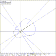

 Figure (adc): The Angle Distance Cursor
The angle distance cursor is a construction aid used to measure angles and distances. It should be noted that all measurements are made in the projected space of the screen, so one should measure only in a view normal to the surface where the measurement is to take place. The ADC is placed on (or removed from) the display by pushing the ``ADC'' button. The ADC consists of three cursors which cover the entire screen. Figure (adc) depicts the ADC as it appears on the screen. All the cursors are centered at the same point and can be moved to any location on the screen. Two of these cursors rotate for angle measuring purposes. Angle cursor 1 is solid while angle cursor 2 is dashed. Angle cursor 1 has movable tic marks for measuring distances on the screen. The two angle cursors move with the horizontal and vertical lines of the main cursor. The resulting effect is the moving of the center point horizontally or vertically. The ADC is controlled by the bottom row of the (Megatek) knobs:
Knob Function 6 moves the center in the horizontal direction 7 moves the center in the vertical direction 8 rotates angle cursor 1 (alpha) 9 rotates angle cursor 2 (beta) 10 moves the tic marks
Whenever the ADC is on the screen, there is a readout at the bottom of the screen listing pertinent information about the ADC. This information includes the angles that angle cursors 1 and 2 have been rotated (alpha and beta), the distance the tic marks are from the center of the ADC, and the location of the center of the ADC. This information is continually updated on the screen.
{kind=link}